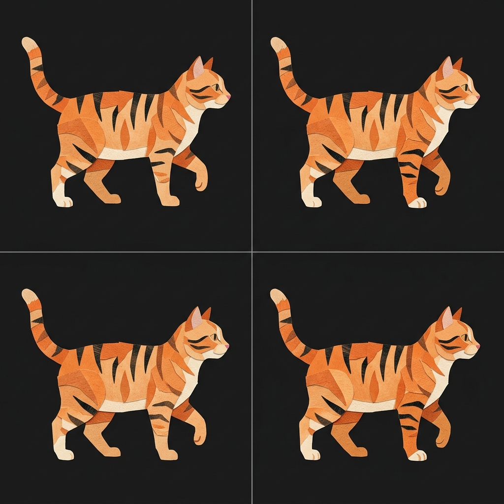
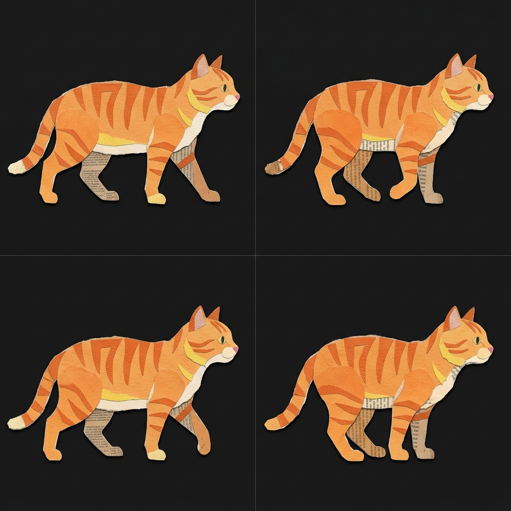
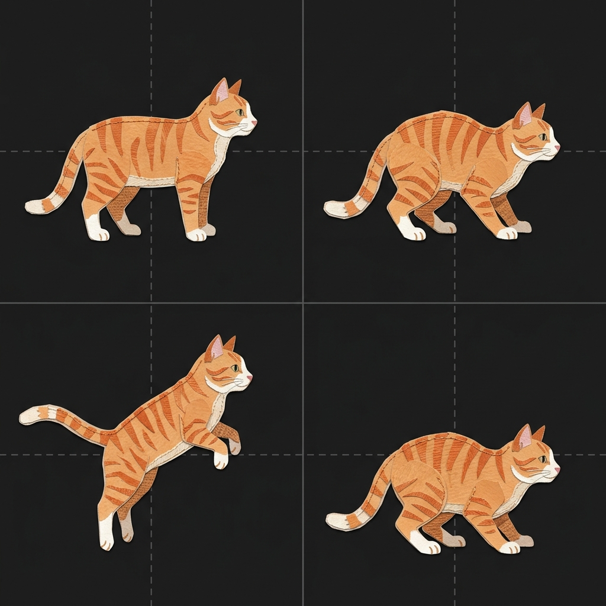
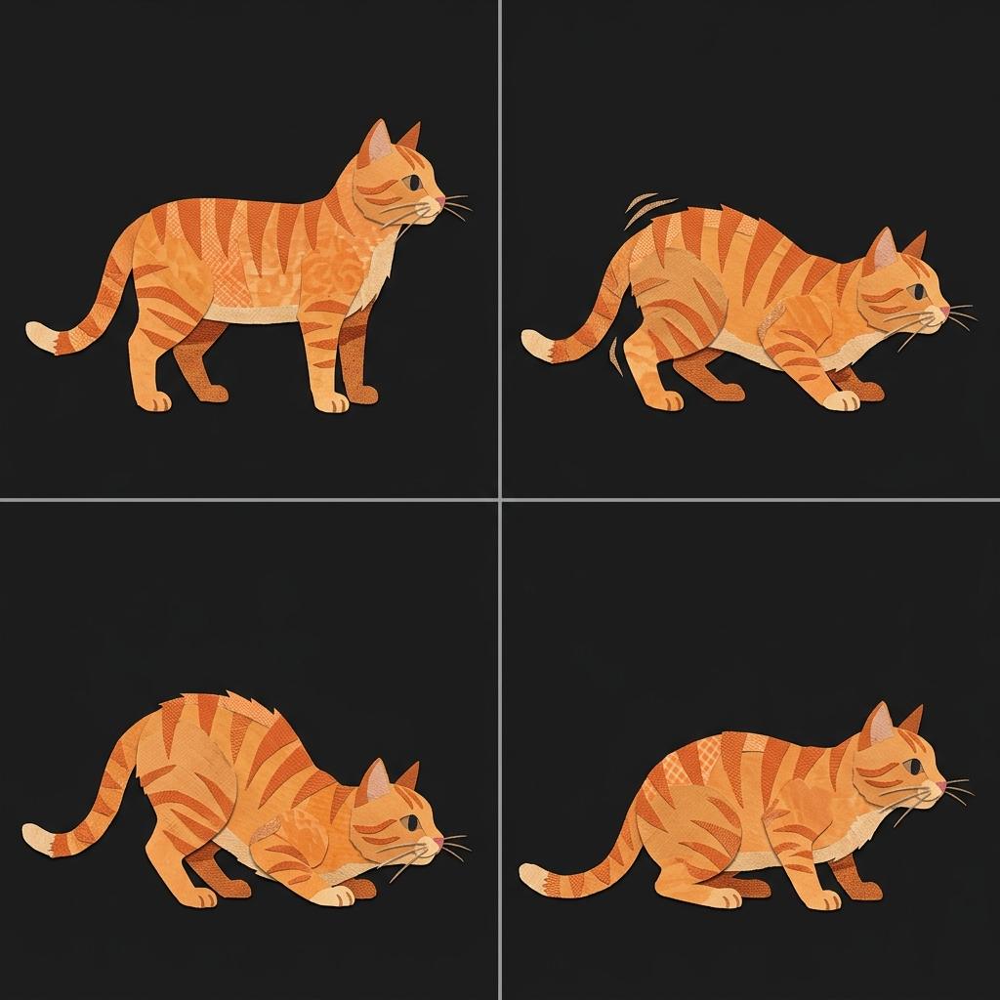

2x2 grid sprite sheet with 4 animation frames, each frame centered in its quadrant. an orange tabby cat, mixed media collage style paper cutout, side view facing right. Frame 1 (top-left): cat standing, front right paw lifted forward. Frame 2 (top-right): IDENTICAL cat, front right paw planted, front left paw lifted forward. Frame 3 (bottom-left): IDENTICAL to frame 1. Frame 4 (bottom-right): IDENTICAL to frame 2. CRITICAL: the ONLY difference between frames is which front paw is forward. Back legs, tail, head, body ALL stay exactly the same. Solid #1a1a1a background, no text.
2x2 grid sprite sheet with 4 animation frames, each frame centered in its quadrant. an orange tabby cat, mixed media collage style paper cutout, side view facing right, walking. Frame 1 (top-left): right legs forward, left legs back. Frame 2 (top-right): legs passing through center, close together. Frame 3 (bottom-left): left legs forward, right legs back. Frame 4 (bottom-right): legs passing through center again. CRITICAL: same cat, same size, same head position in every frame. Only the leg positions change. Solid #1a1a1a background, no text.
2x2 grid sprite sheet with 4 animation frames, each frame centered in its quadrant. an orange tabby cat, mixed media collage style paper cutout, side view facing right. Frame 1 (top-left): cat at normal height, normal proportions. Frame 2 (top-right): IDENTICAL cat but slightly squished shorter and wider, legs bent, about to jump. Frame 3 (bottom-left): IDENTICAL cat but stretched slightly taller and narrower, paws off ground, at peak of small hop. Frame 4 (bottom-right): IDENTICAL cat landing, slightly squished again. CRITICAL: same cat, same style, same facing direction. Only the height and compression of the body changes. Solid #1a1a1a background, no text.
2x2 grid sprite sheet with 4 animation frames, each frame centered in its quadrant. an orange tabby cat, mixed media collage style paper cutout, side view facing right. Frame 1 (top-left): cat standing upright, alert. Frame 2 (top-right): cat crouching lower, butt wiggling up. Frame 3 (bottom-left): cat crouched very low, rear raised, about to pounce. Frame 4 (bottom-right): cat back to half-crouch, settling. CRITICAL: same cat, same style, same facing direction in every frame. Solid #1a1a1a background, no text.